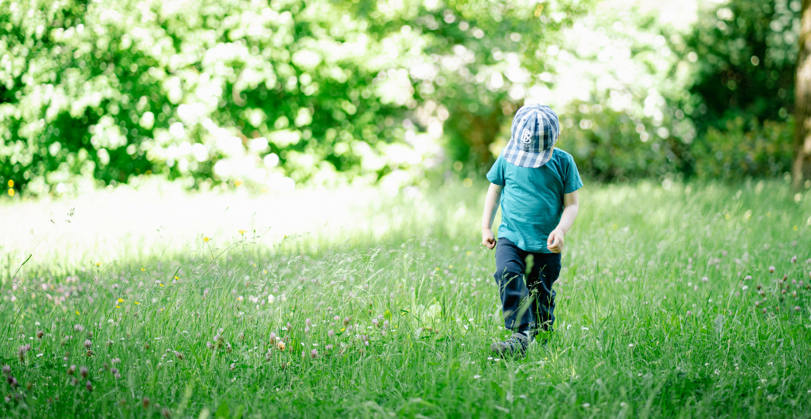

استعد توازنك

يُعد القلق تجربة إنسانية طبيعية، لكنه عندما يتجاوز حدوده ويصبح رفيقاً يومياً، يبدأ في استنزاف الطاقة النفسية والجسدية. في عالمنا المعاصر المتسارع، أصبح البحث عن التحكم في القلق ضرورة ملحة وليس مجرد رفاهية. القلق ليس مجرد شعور بالخوف، بل هو سلسلة من الاستجابات الفسيولوجية والعقلية التي تحتاج إلى إدارة واعية وتقنيات مدروسة لتحويلها من عائق إلى قوة دافعة.
مفهوم القلق وآليات الاستجابة
يعتبر التحكم في القلق الخطوة الأولى نحو تحسين جودة الحياة، حيث تبدأ العملية بفهم أن القلق هو "جهاز إنذار" داخلي يعمل بشكل مفرط. عندما نشعر بالتوتر، يفرز الجسم هرمونات مثل الأدرينالين والكورتيزول، مما يؤدي إلى تسارع ضربات القلب وضيق التنفس. الهدف من تقنيات الإدارة ليس إلغاء الشعور تماماً، بل تعلم كيفية توجيه هذه الطاقة ومنعها من السيطرة على قراراتنا اليومية.
تتطلب استراتيجيات التحكم في القلق تدريباً مستمراً على مراقبة الأفكار التلقائية. فغالباً ما ينشأ القلق من توقعات سلبية للمستقبل أو تضخيم للمشكلات الصغيرة. من خلال ممارسة الوعي الذاتي، يمكن للفرد تحديد المحفزات التي تثير توتره، مما يسهل تطبيق الحلول العملية قبل أن تتفاقم الحالة وتصل إلى مرحلة الهلع أو التعطيل التام للمهام اليومية.
تقنيات التنفس لتهدئة الجهاز العصبي
تعتبر تمارين التنفس العميق من أسرع وأنجح الوسائل في التحكم في القلق بشكل فوري. عندما نتنفس ببطء وعمق، نرسل إشارة مباشرة إلى الدماغ بأننا في أمان، مما يحفز الجهاز العصبي الباراسمبثاوي المسؤول عن الاسترخاء. إحدى أشهر هذه الطرق هي "تنفّس المربع"، حيث تستنشق الهواء لمدة 4 ثوانٍ، تحتفظ به لـ 4 ثوانٍ، ثم تزفره في 4 ثوانٍ، وتنتظر 4 ثوانٍ قبل التكرار؛ هذه العملية تضمن خفض مستويات التوتر في دقائق معدودة.
بالإضافة إلى ذلك، يلعب التركيز على الشهيق والزفير دوراً محورياً في صرف الانتباه عن الأفكار المقلقة. ممارسة هذه التقنية يومياً، حتى في أوقات الهدوء، تبني "عضلة" نفسية قوية تساعدك على التحكم في القلق وقت الأزمات. إن الربط بين التنفس الواعي والحضور الذهني يقلل من حدة استجابة "الكر والفر" التي يقع فيها مريض القلق، مما يمنحه شعوراً بالسيطرة والسكينة الداخلية.
دور الرياضة في تفريغ التوتر النفسي
لا تقتصر فوائد النشاط البدني على الصحة الجسدية فحسب، بل هي ركيزة أساسية في التحكم في القلق المستمر. ممارسة الرياضة تساعد في حرق هرمونات التوتر الزائدة وتحفز إنتاج "الإندورفين"، وهي المواد الكيميائية الطبيعية في الدماغ التي تعمل كمسكنات للألم ومحسنات للمزاج، مما يجعل الجسم والعقل في حالة من الاسترخاء الطبيعي بعد المجهود البدني.
في الختام، إن رحلة التحكم في القلق هي مسار تراكمي يتطلب الصبر والاستمرارية. من خلال الجمع بين فهم المحفزات، وتطبيق تقنيات التنفس، والالتزام بالنشاط البدني، يمكنك تحويل القلق من وحش كاسر إلى مجرد إشارة عابرة. تذكر دائماً أن طلب المساعدة المختصة عند الحاجة هو علامة قوة، وأن امتلاكك للأدوات الصحيحة هو مفتاحك الذهبي لعيش حياة أكثر طمأنينة واتزاناً.
كيف يمكننا دعم الأطفال نفسياً لبناء شخصية متزنة؟

تعتبر الطفولة المرحلة التأسيسية التي تشكل ملامح الشخصية المستقبلية، ولذلك فإن دعم الأطفال نفسياً ليس مجرد خيار تربوي، بل هو استثمار طويل الأمد في صحة المجتمع. يواجه الأطفال في عصرنا الحالي تحديات متزايدة، بدءاً من ضغوط الدراسة وصولاً إلى تأثيرات العالم الرقمي، مما يجعل دور الأسرة والمدرسة في توفير الأمان النفسي أمراً حيوياً لضمان نموهم بشكل سليم بعيداً عن الاضطرابات السلوكية
أهمية الأمان العاطفي في مرحلة الطفولة
تبدأ رحلة دعم الأطفال نفسياً من المنزل، حيث يعتبر الشعور بالأمان العاطفي هو الوقود الذي يحرك الطفل نحو التعلم والاستكشاف. عندما يشعر الطفل بأن مشاعره مقدرة ومسموعة من قبل الوالدين، يزداد لديه الشعور بالثقة بالنفس والقدرة على مواجهة الصعاب. إن توفير بيئة خالية من التهديد والنقد اللاذع يسمح للطفل بالتعبير عن مخاوفه وتطلعاته بصدق، مما يسهل عملية التدخل المبكر في حال وجود أي بوادر لمشكلات نفسية.
علاوة على ذلك، فإن دعم الأطفال نفسياً يساهم بشكل مباشر في تطوير "الذكاء العاطفي" لديهم. فالطفل الذي يتلقى مساندة نفسية مستمرة يتعلم كيف يفهم مشاعره الخاصة وكيفية التعاطف مع الآخرين. هذا النوع من الدعم لا يتطلب الكثير من الإمكانيات، بل يحتاج إلى "وقت نوعي" يقضيه المربي مع الطفل، يستمع فيه إليه بتركيز ويشاركه أنشطته، مما يعزز الروابط الأسرية ويخلق درعاً واقياً ضد الأزمات النفسية المستقبلية.
تقنيات الاستماع الفعال والتحفيز الإيجابي
تقنيات الاستماع الفعال والتحفيز الإيجابي
يُعد الاستماع الفعال أحد أهم الأدوات المستخدمة في دعم الأطفال نفسياً، حيث يتجاوز مجرد سماع الكلمات إلى فهم المشاعر الكامنة وراءها. عندما يتحدث الطفل عن مشكلة واجهته في المدرسة، فإن الرد بالتعاطف بدلاً من إلقاء اللوم يساعده على الشعور بأنه ليس وحده في مواجهة العالم. التحفيز الإيجابي أيضاً يلعب دوراً محورياً؛ فبدلاً من التركيز فقط على النتائج والإنجازات، يجب الثناء على المجهود والمحاولة، مما يقلل من القلق المرتبط بالفشل.
تعتمد فعالية تقنيات دعم الأطفال نفسياً على الاستمرارية والوضوح في التعامل. من المهم تشجيع الطفل على ممارسة الهوايات التي يحبها، ومنحه مساحة من الحرية لاتخاذ قرارات بسيطة تخصه، فهذا يعزز من استقلاليته ويقلل من شعوره بالضغط. إن بناء روتين يومي مستقر يتضمن ساعات كافية من النوم واللعب والحوار يقلل من التوتر ويوفر للطفل هيكلاً واضحاً يشعره بالاستقرار النفسي والذهني.
دور المدرسة والمجتمع في التكامل النفسي
لا يقتصر دعم الأطفال نفسياً على الأسرة فحسب، بل يمتد ليشمل البيئة المدرسية التي يقضي فيها الطفل جلّ يومه. المعلمون والمدربون الرياضيون لهم تأثير كبير في تعزيز الصحة النفسية للطفل من خلال خلق بيئة تعليمية محفزة تحارب التنمر وتشجع على التعاون. التكامل بين دور البيت والمدرسة يضمن إحاطة الطفل بشبكة أمان متكاملة تكتشف مواهبه وتدعم نقاط ضعفه برفق.
إن دعم الأطفال نفسياً هو مسؤولية جماعية تبدأ بكلمة طيبة وتنتهي ببناء جيل قادر على مواجهة تحديات الحياة بمرونة. من خلال الاستماع، والتفهم، وتوفير البيئة المحفزة، نمنح أطفالنا أعظم هدية يمكن تقديمها: "السلام الداخلي". تذكر دائماً أن الطفل الذي يشعر بالدعم اليوم، هو الشخص الناجح والمتزن الذي سيقود المستقبل غداً.